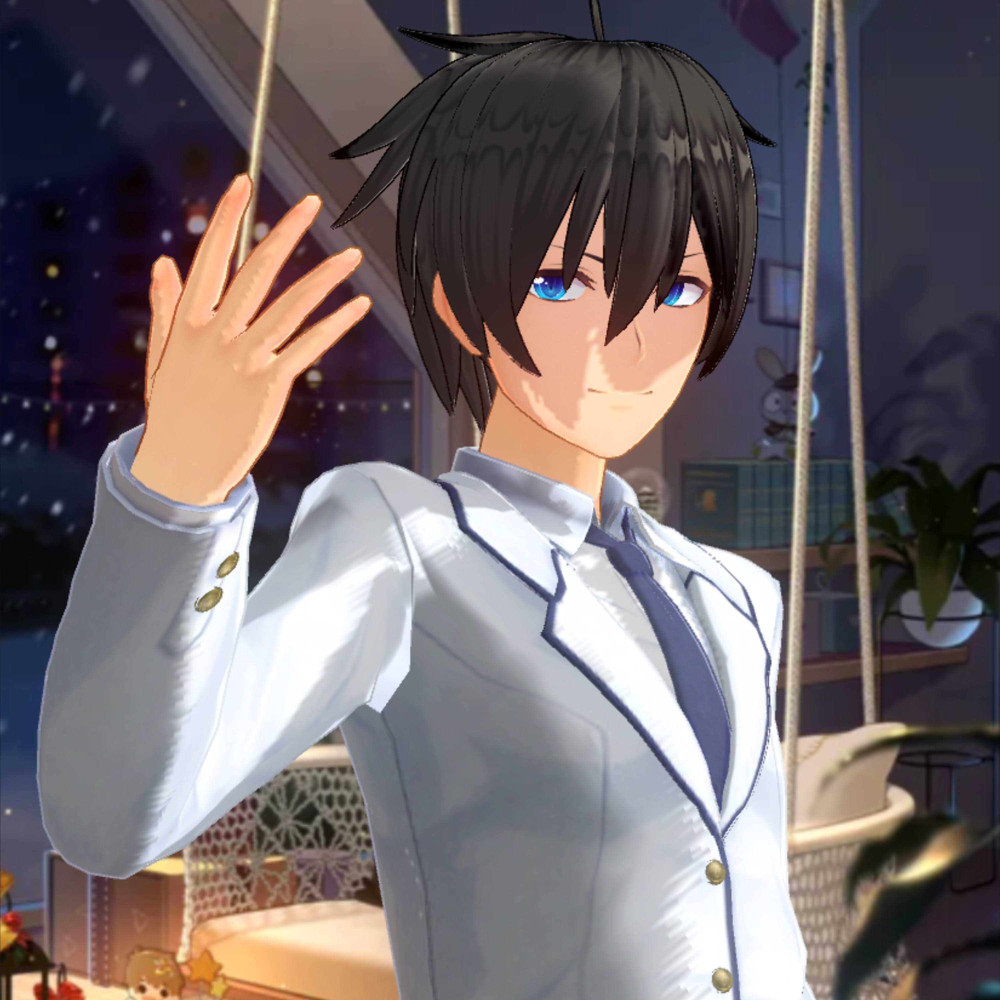

I'm Gareth. How are you?
This year, I am and I live in Asia. I have a few hobbies such as programming, gaming, playing sports etc.
My Journey:
When I was younger, I didn't have any passion for coding or programming. My initial passion was drawing comics or mangas. You could say I wasn't as calculative
back then. Coding or programming peaked my interest when my parents told me that skill is going to be useful for future vacancies.
I tried programming at first because I was at the time where maths or maths related subjects were somthing that I liked
but it eventually faded in weeks due to me not being able to remember any information and hated myself for it.
Then somewhere in my life, I decided to pick up coding again using python. It's was fun but I felt something was lacking when I'm coding.
That's when I realised that there were videos out there that can help me to code outside of my bubble that was limiting me to advance further.
The world around you can be great if you made significant discoveries!
cont.
Subjects:
My main subjects that I take for A level are Mathematics, Further Mathematics, Computer Science and Physics. The reason why I chose these subjects
is because I have some courses that I want to do in the future and I'm always crippled with indecision everytime when there's a dilemma that I think
all choices could benefit me.
A LEVEL GRADES:
- Further Maths(A2): TBA
- Mathematics(A2): TBA (A for mocks)
- Physics(AS): TBA(B for mocks)
- Computer science(AS): TBA (A for mocks)
*It's very terrible tbh
Music:
I play the violin currently and I'm below average in my opinion. I produce
rap music and instrumentals from the various genre of songs I listen to such as
rap, acoustic and J-Pop to rock. These days, I usually listen to J-Pop to rock.
My favourite artists include Mafumafu, NF, Aimer, Eve, Kenshi Yonezu and Kalafina etc.
Games:
Usually, I play Genshin Impact, Honkai Impact, Tears of Themis, Chess, PES and some football managerial games.
Yes, just by looking at some games, you may know that I'm a weeb and no, I don't have any gambling addiction as I don't pay to get what I want.
Additional Info:
STEM Project
Contact me: